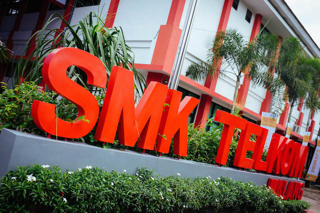

Tentang
SMK Telkom
Malang
SMK Telkom Malang adalah pelopor Sekolah menengah
kejuruan pertama di Indonesia di bidang Teknologi dan
Informatika. Berpengalaman dari tahun 1992 yang telah
terakreditasi "A" dan mempunyai standart mutu ISO
9001:2008.
